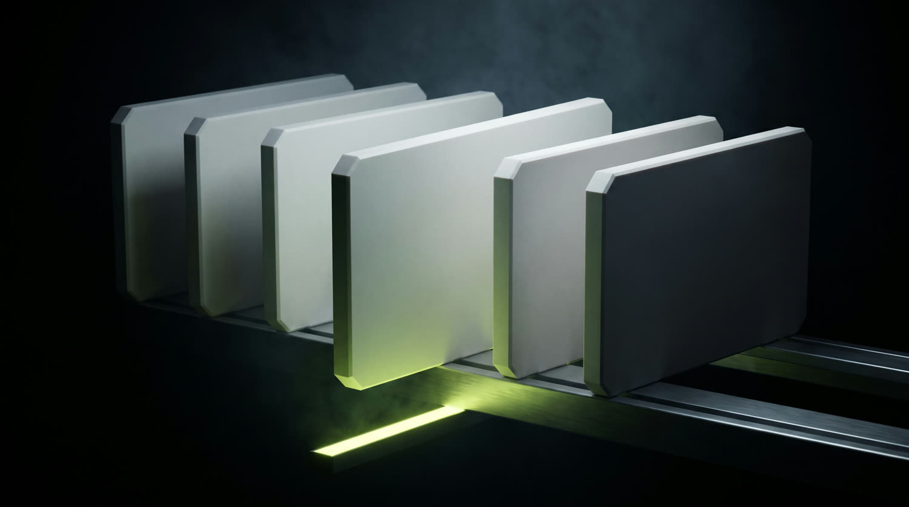
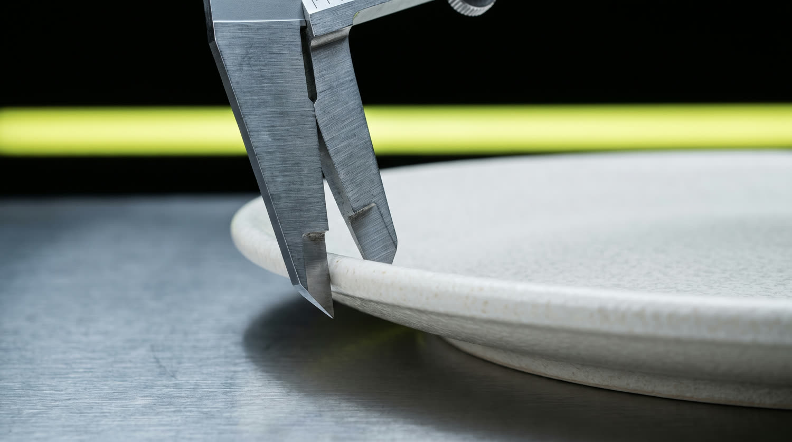
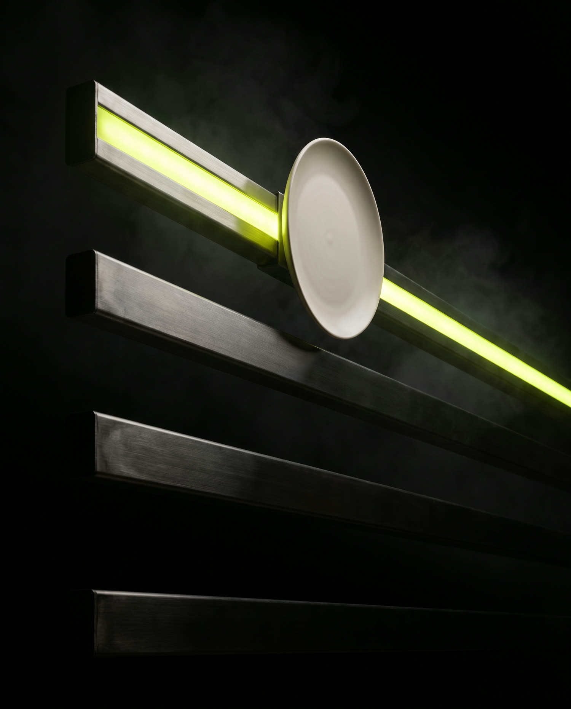
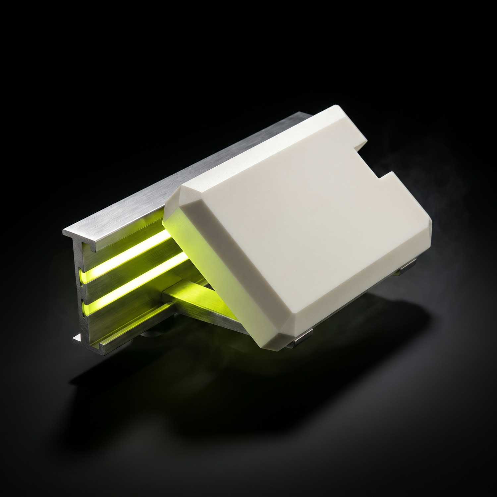
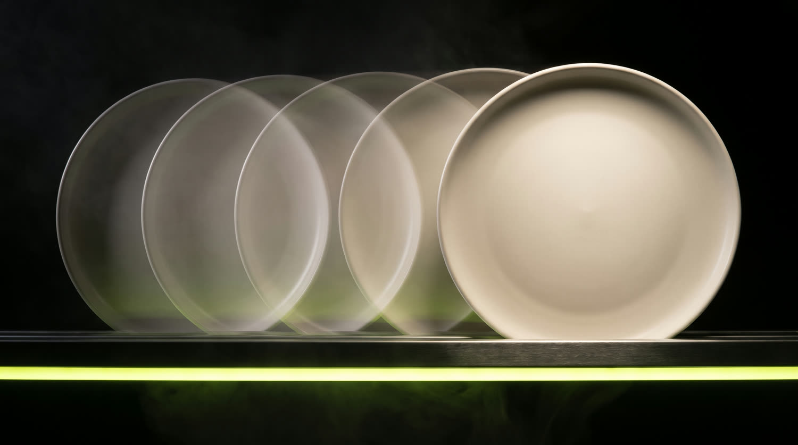
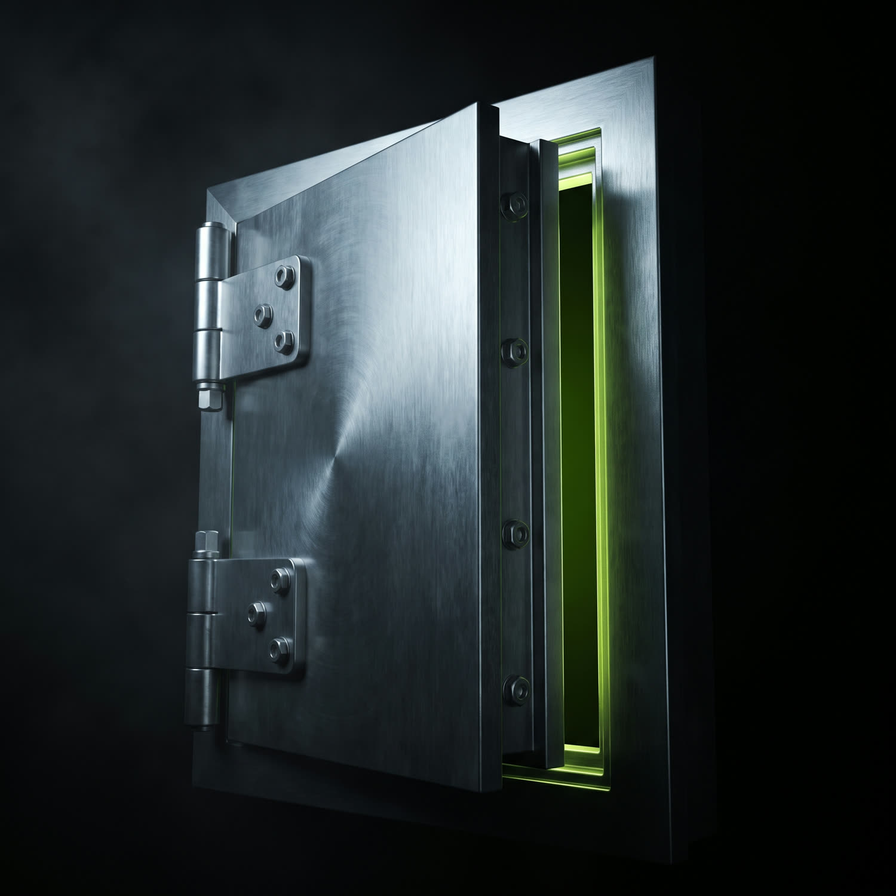

Reading chain 46630%
A breakout board for Robinhood Chain memecoins. It tracks which coins actually break through — and shows you the evidence for every call.
Thousands of coins launch here. A handful hold their ground long enough to matter. The Board is the short list — and everything below it stays visible, with the reason it didn't qualify.


Touching a number is not making the Board. A coin joins a tier only when it stays above that tier's line — continuously, on its canonical market. Fall back and it drops immediately.
Most runs never get here. That is the point of the number.
Each tier is a line a coin has to hold. Move up and the module climbs; lose the line and it comes straight back down.


Click any coin and it extracts from the rail, carrying the evidence the Board used to place it — including which market it trusted, and why.
Value series, usable depth, buys and sells.
Contract, pool, age, and the canonical-market decision, in full.
The description and links the contract itself carries.
A screenshot of the project's site, taken by us.
The Board is a state, so it can be rebuilt at any minute of the last 24 hours. Scrub back and watch coins climb, qualify, make a tier — and come off it.

Most of the work went into what the Board declines to say. A tool that fills its gaps with plausible guesses is worse than useless in a market like this one.

A live board of Robinhood Chain memecoins that have held a value tier for at least six continuous hours. Not a screener and not a price ticker — a short list, with the evidence attached to every entry.
Because it separates a breakout from a wick. The threshold was fitted on historical runs and then tested against a held-out set it had never seen — where it admitted no wicks at all, and nothing that never reached its tier. It is deliberately strict: it misses real runners rather than inventing them.
No. Nothing on HOOD BOARD is financial advice, an endorsement, or a recommendation. It reports what held. Memecoins are high risk and most go to zero.
Directly from Robinhood Chain — pools, trades and token contracts read on chain 4663. Every figure is observed, or derived by a stated method. Nothing is estimated to fill a gap.
No. The Board is free to use, with no wallet connect and no account.
Soon. The waiting list on Telegram gets told first.
Join the waiting list and you'll know the moment the Board opens.